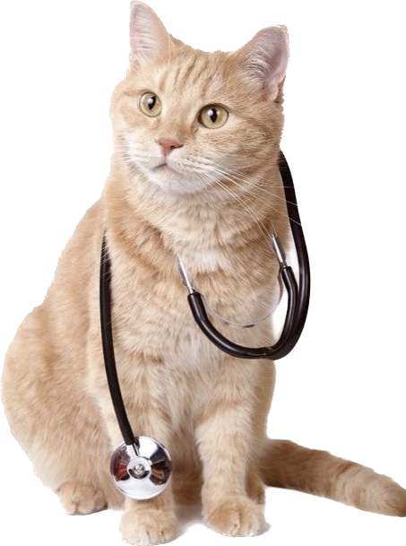
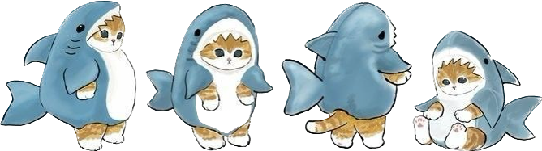

Nơi mang lại tình yêu và sức khỏe cho thú cưng của bạn
DỊCH VỤ TRIỆT SẢN THÚ CƯNG
Uy Tín -- Chất Lượng - Nhiệt Huyết
TẦM QUAN TRỌNG CỦA VIỆC TRIỆT SẢN
Giúp giảm nguy cơ các vấn đề sức khỏe, nhiều bệnh liên quan đến sinh sản có thể được ngăn ngừa bằng cách triệt sản, chẳng hạn như ung thư vú ở chó và mèo, nhiễm trùng tiết niệu, nhiễm trùng tử cung, khối u sinh dục và các vấn đề sức khỏe khác.
Triệt sản có thể giúp giảm độ hung dữ và tăng tính thân thiện của thú cưng, đặc biệt là đối với những con vật đực, giúp chúng ít cạnh tranh hơn với nhau.

PHƯƠNG PHÁP TRIỆT SẢN TẠI PETCARE
Phẫu Thuật
Ưu điểm
Hiệu quả cao: Phẫu thuật triệt sản là phương pháp đảm bảo triệt để loại bỏ khả năng sinh sản của thú cưng, giúp ngăn ngừa hiệu quả các vấn đề liên quan đến sinh sản như: quá nhiều con, bệnh tật phức tạp, v.v.
An toàn: Phẫu thuật triệt sản được thực hiện dưới sự quan sát của bác sĩ thú y chuyên nghiệp, đảm bảo an toàn và ít gây đau đớn cho thú cưng hơn so với tiêm ngừa triệt sản.
Tiết kiệm chi phí: Mặc dù chi phí phẫu thuật triệt sản ban đầu có thể cao hơn so với tiêm ngừa triệt sản, nhưng trong thời gian dài, chi phí cho việc tiêm ngừa liên tục sẽ lớn hơn.
Tiêm Vaccine
Ưu điểm
An toàn: Tiêm vaccine triệt sản cho thú cưng là một phương pháp an toàn và không đau đớn cho thú cưng. Không có bất kỳ quá trình phục hồi nào như phẩu thuật triệt sản.
Dễ thực hiện: Tiêm vaccine triệt sản rất dễ thực hiện và nhanh chóng. Thú cưng của bạn chỉ cần tiêm một liều duy nhất và sau đó được bảo vệ khỏi bệnh suốt đời.
Hiệu quả: Tiêm vaccine triệt sản là một phương pháp hiệu quả trong việc ngăn chặn sự lây lan của bệnh và bảo vệ thú cưng khỏi các bệnh liên quan đến vi khuẩn triệt để.
Quy trình phẩu thuật tại Petcare
Bước 1: Tiền xử lý: trước khi phẩu thuật, thú cưng sẽ được tiêm thuốc giảm đau và tiêm chống dị ứng. Bạn cũng sẽ được yêu cầu không cho thú cưng ăn uống trước khi phẩu thuật từ 8 đến 12 giờ để tránh tình trạng buồn nôn và nôn mửa.
Bước 2: Phẩu thuật: sau khi tiền xử lý, thú cưng sẽ được đưa vào phòng phẩu thuật và được đưa vào trạng thái gây mê. Sau đó, bác sĩ thú y sẽ tiến hành phẫu thuật triệt sản bằng cách cắt bỏ tinh hoàn hoặc buồng trứng.
Bước 3: Hồi phục: sau khi phẫu thuật, thú cưng sẽ được đưa vào khu vực phục hồi và theo dõi trước khi được trả lại cho bạn. Bạn sẽ được hướng dẫn về cách chăm sóc thú cưng của mình trong giai đoạn hồi phục và các biện pháp chăm sóc sau phẫu thuật.
Giá: 1 triệu - 3 triệu
Quy trình tiêm vaccine triệt sản
Bước 1: Kiểm tra tình trạng sức khỏe của thú cưng trước khi tiêm.
Bước 2: Chọn loại vaccine triệt sản phù hợp phụ thuộc vào tuổi, kích thước và sức khỏe của thú cưng.
Bước 3: Chuẩn bị vaccine và vật dụng tiêm. Trước khi tiêm, ống tiêm và kim tiêm sẽ được vệ sinh và khử trùng để đảm bảo an toàn.
Bước 4: Tiêm vaccine: thú cưng sẽ được tiêm vaccine triệt sản tại các vị trí khác nhau.
Bước 5: Theo dõi sức khỏe của thú cưng sau tiêm: sau khi tiêm vaccine triệt sản, thú cưng sẽ được quan sát để đảm bảo rằng chúng không có phản ứng phụ nào.
Giá: 300K-500K
NHỮNG CÂU HỎI THƯỜNG GẶP
Chính sách bảo vệ sức khỏe thú cưng
Chính sách bảo vệ sức khỏe thú cưng là một trong những ưu tiên hàng đầu của chúng tôi tại cửa hàng chăm sóc thú cưng.
Chúng tôi xác định rằng để đảm bảo sức khỏe và sự an toàn cho thú cưng, các chủ nuôi cần phải thực hiện đầy đủ các biện pháp vệ sinh và tiêm ngừa định kỳ cho thú cưng của mình.
Vì vậy, chúng tôi khuyến khích và yêu cầu tất cả các khách hàng khi sử dụng các dịch vụ chăm sóc thú cưng của chúng tôi, bao gồm cả lưu trú, phải đảm bảo thú cưng đã được tiêm ngừa mới nhất và đáp ứng các tiêu chuẩn vệ sinh cần thiết.
Điều này không chỉ đảm bảo sức khỏe cho thú cưng của bạn, mà còn đảm bảo sức khỏe cho tất cả các thú cưng khác trong khu vực.
Chúng tôi cam kết tuân thủ nghiêm ngặt các quy định và tiêu chuẩn vệ sinh cần thiết để đảm bảo môi trường sống sạch sẽ, an toàn và thoải mái cho thú cưng của bạn.
Nhân viên và trang thiết bị
PET CARE luôn đặt chất lượng dịch vụ lên hàng đầu để đáp ứng được yêu cầu khách hàng ngày càng cao.
Nhân viên được tuyển chọn kỹ càng và đào tạo bài bản, đảm bảo có đầy đủ kỹ năng và tinh thần trách nhiệm để phục vụ khách hàng tốt nhất.
Chúng tôi cũng thường xuyên cập nhật kiến thức và kỹ năng mới cho nhân viên để đáp ứng được nhu cầu khách hàng ngày càng đa dạng.
Về trang thiết bị, PET CARE đầu tư mạnh vào các thiết bị hiện đại và đầy đủ chức năng để hỗ trợ các dịch vụ của chúng tôi.
Chúng tôi đảm bảo mọi trang thiết bị được kiểm tra kỹ lưỡng trước khi sử dụng để đảm bảo an toàn và hiệu quả trong việc phục vụ khách hàng.
Cửa hàng PET CARE ở đâu?
PETCARE, 168 Nam Kỳ Khởi Nghĩa, Quận 1, TP. Hồ Chí Minh.
Triệt sản có đảm bảo an toàn cho thú cưng không?
Quá trình triệt sản được tiến hành bởi các bác sĩ thú y có chuyên môn và kinh nghiệm trong lĩnh vực này. Tuy nhiên, như bất kỳ thủ thuật phẫu thuật nào, việc triệt sản cũng có một số rủi ro nhất định. Tuy nhiên, với các biện pháp phòng ngừa và tiền sử y tế cẩn thận, rủi ro sẽ được giảm thiểu tối đa.
Triệt sản có ảnh hưởng gì đến sức khỏe và tâm lý của thú cưng không?
Phương pháp triệt sản có thể ảnh hưởng đến sức khỏe và tâm lý của thú cưng một cách tạm thời. Sau phẫu thuật, thú cưng có thể gặp một số tình trạng khó chịu và không thoải mái như đau, khó chịu, mệt mỏi và buồn nôn. Tuy nhiên, các tình trạng này thường sẽ được giảm dần và thú cưng sẽ phục hồi trong vài ngày sau đó.
Ngoài ra, triệt sản có thể ảnh hưởng đến tâm lý của thú cưng nếu chủ nuôi không cung cấp đủ chăm sóc và tình yêu thương cho thú cưng trong quá trình phục hồi. Tuy nhiên, với sự quan tâm và chăm sóc đúng cách, thú cưng sẽ trở lại với sức khỏe và tâm lý tốt sau phẫu thuật.
Tiền án, tình trạng sức khỏe của thú cưng có ảnh hưởng đến quá trình triệt sản không?
Tiền án và tình trạng sức khỏe của thú cưng có thể ảnh hưởng đến quá trình triệt sản.
Trong một số trường hợp, các vấn đề sức khỏe có thể làm tăng rủi ro trong quá trình phẫu thuật. Vì vậy, trước khi quyết định triệt sản cho thú cưng, thú y sẽ thực hiện một cuộc khám sức khỏe toàn diện để đảm bảo rằng thú cưng đủ sức khỏe để chịu đựng quá trình phẫu thuật và điều trị sau đó. Các bệnh lý nền tảng như bệnh tim, bệnh phổi hoặc bệnh thận cũng có thể ảnh hưởng đến quá trình phục hồi của thú cưng sau khi phẫu thuật.
Triệt sản cần phải được thực hiện ở độ tuổi nào của thú cưng?
Thường thì các chuyên gia khuyến cáo nên thực hiện quá trình triệt sản khi thú cưng đã đạt độ tuổi trưởng thành,
thường là từ 6 tháng đến 1 tuổi đối với chó và mèo.
Tuy nhiên, độ tuổi phù hợp cũng phụ thuộc vào loài và kích thước của thú cưng,
nên việc tư vấn với bác sĩ thú y là rất quan trọng để xác định độ tuổi thích hợp
cho quá trình triệt sản. Ngoài ra, trường hợp thú cưng đã trưởng thành nhưng chưa
được triệt sản, việc triệt sản cũng vẫn cần thiết để ngăn ngừa những vấn đề liên quan
đến sinh sản như bệnh nhiễm trùng, ung thư hoặc chứng phì đại tuyến tiền liệt.
PET
CUNG CẤP CÁC DỊCH VỤ THÚ CƯNG
ĐƯỢC YÊU THÍCH NHẤT VIỆT NAM
CARE

Dịch vụ SPA thú cưng tại PETCARE vinh hạnh được các bạn trẻ bình chọn
là thương hiệu được yêu thích nhất năm 2022!